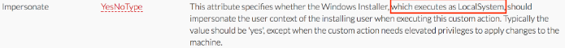

https://blog.xpnsec.com/becoming-system/
Changes you need to make!- At minimum, the Property line needs to be changed to the command you want to execute
- <File Id="ApplicationFile1" Source="example.exe"/> also needs to be changed (example.exe doesn't exist) or removed in order to build the msi
It turns out that a benefit of launching your code via an MSI are the SYSTEM privileges that you gain during the install process. To understand how this works, we need to look at WIX Toolset, which is an open source project used to create MSI files from XML build scripts.
The WIX Framework is made up of several tools, but the two that we will focus on are:
candle.exe - Takes a .WIX XML file and outputs a .WIXOBJ
light.exe - Takes a .WIXOBJ and creates a .MSI
Reviewing the documentation for WIX, we see that custom actions are provided, which give the developer a way to launch scripts and processes during the install process. Within the CustomAction documentation, we see something interesting:

This documents a simple way in which a MSI can be used to launch processes as SYSTEM, by providing a custom action with an Impersonate attribute set to false.
When crafted, our WIX file will look like this: (see child page Custom WiX File)
A lot of this is just boilerplate to generate a MSI, however the parts to note are our custom actions:
<Property Id="cmdline">powershell...</Property>
<CustomAction Id="SystemShell" Execute="deferred" Directory="TARGETDIR" ExeCommand='[cmdline]' Return="ignore" Impersonate="no"/>
This custom action is responsible for executing our provided cmdline as SYSTEM (note the Property tag, which is a nice way to get around the length limitation of the ExeCommand attribute for long Powershell commands).
Another trick which is useful is to ensure that the install fails after our command is executed, which will stop the installer from adding a new entry to "Add or Remove Programs" which is shown here by executing invalid VBScript:
<CustomAction Id="FailInstall" Execute="deferred" Script="vbscript" Return="check">
invalid vbs to fail install
</CustomAction>
Finally, we have our InstallExecuteSequence tag, which is responsible for executing our custom actions in order:
<InstallExecuteSequence>
<Custom Action="SystemShell" After="InstallInitialize"></Custom>
<Custom Action="FailInstall" Before="InstallFiles"></Custom>
</InstallExecuteSequence>
So, when executed:
Our first custom action will be launched, forcing our payload to run as the SYSTEM account.
Our second custom action will be launched, causing some invalid VBScript to be executed and stop the install process with an error.
To compile this into a MSI we save the above contents as a file called "msigen.wix", and use the following commands:
candle.exe msigen.wix
light.exe msigen.wixobj
Finally, execute the MSI file to execute our payload as SYSTEM.